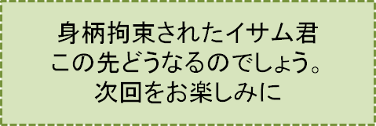

2センチの隙間-PART6-
『再びA子を訪ねて』の巻
笠原正雄
この日お昼過ぎまで殆んど仕事も手がつかず、苦しかった受験時代のことA子のこと、などなどを繰り返し考えていました。A子にまつわる回想は次から次へと尽きることはありません。
“A子は今も浜清水のどこかで暮らしているんだろうなぁ”
“修道院で修道女さん？ 保育園でのお仕事？ それとも小学校の先生？ 老人ホームの介護士さんかも知れないなぁ”
こんなことを止めどもなく考え続けます。
午後2時頃だったでしょう。私は弾かれたように椅子から立ち上がり、
“よーし、こう決めた！ 断然こうしよう！”
と独り言を言いながら人事課に急ぎます。
2週間の「特別休暇願い」を提出しようという訳です。
明日からの土曜日曜をはさんでたっぷり半月以上、浜清水の一市民としてゆっくり過ごそう、会社に迷惑をかけないよう仕事もしよう、というのが私のプランです。
“浜清水のどこかで暮しているに違いないA子の近くで一市民としての生活を楽しもう”
私なりに納得するワクワクするような休暇プランです。
勿論、例えば浜清水の市役所を訪ねて
“私の親しい友人「賀集あや乃」さんの現住所を教えて下さいませんか”
と願い出ることも考えられるかも知れませんね。しかし「個人情報保護問題」が大きな壁となって恐らく話にならないでしょう。
何よりも大切なこととしてA子にはA子の人生があるでしょう。そして私にも私の人生があります。だからこそ、浜清水でA子を近くに感じながら浜清水の一市民としてたっぷり時間を過ごそうという強い思い、もたげます。A子の存在を常に間近に感じながら生活したい、A子への到底消えることのない想いです。
終生忘れることのできない女神のような存在A子への、決して消えることのない熱い想いです。
明日からの2週間の「特別休暇」は在宅勤務に近い長期休暇です。
特別休暇期間中は、私の場合1日最低3時間ネットを介しての仕事が義務づけられます。夏のシーズン冬のシーズン、好きなことをしながら休暇を楽しめるという我が社特有の制度です。
メールでの打ち合わせに加えて、PDFという形でのカラフルな図表つき文書等を必要に応じで送付することも義務づけられています。
午前中の3時間で仕事は終わり後は楽しい自由行動の時間です。夏であれば登山水泳を楽しみ、冬はスケートやスキーを存分に楽しむことが出来ます。
翌土曜日の朝午前8時、私は「JR舞駅」発の特急電車「ビーチ浜清水2号」の乗客になっていました。
車内でサンドイッチと冷めたーいリンゴジュースという遅めの朝食です。サンドイッチに舌鼓（したづつみ）を打った後は、リンゴジュースをゆっくりゆっくり飲みます。
しかし、車窓に広がる山河の風景を楽しむのはこの朝食の時間だけ。
朝食を終えると早速ノートPCを膝の上に乗せ会社の仕事スタートです。
3時間夢中で仕事に取り組む私を乗せて、「ビーチ浜清水2号」は定刻11時に「浜清水駅」プラットフォームに滑り込みます。
駅前の通りを数分も歩くと見覚えのあるビル、真夏の太陽にキラキラ輝く大理石を散りばめたような5階建てのビルが目に入ってきます。
数年前の大学１年生の夏、何度も足を運んだことのあるお馴染みのレストラン「桃」が5階にあります。
レストランの窓側にはベランダがあって、大型観葉植物の植木鉢が並んでいます。植木鉢と植木鉢の間には、小さな椅子とテーブルが幾つか用意されています。椅子に腰をかけて、町全体をゆっくりした気分で見渡すことが出来るという訳でしょうね。
鉢には赤や白の花を一杯に咲かせた大きな観葉植物が沢山の枝をお日様に向って広げ、小鳥達が三三五五、枝から枝へと飛び交いながら“チッチッ”“チッチッ”と賑やかにさえずります。
遥か向うに大ーきなまぁるい形の森林パークがあります。この森を取り囲むように、アスファルトの大通りが力強く走っています。
浜清水の町を優しく抱く緑緑緑の山並が眺望できます。
夏空にまぶしく輝き魂がすっぽり吸い込まれてしまいそうな緑の山並が、緩やかなスロープを描きながら浜辺に向っています。
食事の後冷たーいお水がなみなみと注がれたコップを手にしてベランダに出ます。眼前に広がる美しい町並に向って思いっきり大きな声で
「A子！」 「A子！」 「A子！」
と叫びます。
頬（ほお）に心地よく当る浜風潮風が、私の声を乗せてA子にきっと届くでしょう。
ベランダでたっぷり時間を過ごした後、市内を思うまゝに歩き回ったり冷やかしのショッピングをしたり、一市民としての生活を楽しみ夕刻「浜ビーチホテル」にチェックインしました。
軽くシャワーを浴びた後、ホテルの近くにあるお気に入りのレストラン「桃」に再び向います。
お昼に続いて２度目の足を運ぶことになります。
カボチャ、ニンジン、ジャガイモなどの野菜そしてチーズたっぷりのパスタを夕食メニューにして、一番見晴らしのよいテーブルに席を取ります。
遥か向うには森林パークが見えます。空には満月が浮かんでいます。森を生活の場にする小鳥達は、思い思いの枝に止まり銀色の月に照らされながら眠っていることでしょう。
森林パークを取り囲む大通りには、くるまが２台３台……、ライトを路面に照らして走っています。
ビルの中では夜勤の人達が仕事をしているのでしょう。あちこちの大きな窓が赤く明るく光ります。
食事を終えベランダに出ると、浜清水を取り囲む山々からの風そして海からの浜風浦風が、頬に心地よく当ります。真夏というのにひんやり頬に当ります。
夜のとばりが降りた町並みに向って大きな声で
「A子！」 「A子！」 「A子！」
と叫びます。この町のどこかに住んでいるに違いないA子に届けとばかりに、大きなおーきな声で叫びます。
数日の間、スーパーマーケットでショッピングをしたり美術館を訪れたり、用件もないのに市役所のロビーに座ったりして一市民の生活を楽しみます。A子と一緒に楽しむ思いで過ごします。
こんな風にして過ごした土曜日の早朝、私はホテルを出て散歩に出掛けます。
まぶしいばかりに輝く夏の青空、雲一つありません。ブルーの大空、空高く見上げるほどにブルーの濃さが増していきます。
ゆっくりゆっくり大通りを歩みます。
背の高い街路樹が大通りを歩く私を迎えてくれます。樹々それぞれが大空に向って思いっきり枝を延ばしています。緑緑の沢山の葉っぱ達が朝日にキラッキラッと光ります。
枝から枝へと飛び交いながら、小鳥達がチッチチッチと盛んに朝の挨拶を交わしています。
小鳥達の合唱、サワサワと鳴る木々の葉達、朝のシンフォニーですね。
耳を傾け首でタクトを振るようにして、ゆっくりゆっくり歩きます。A子と一緒に歩む思いが募ります。
街路樹が尽きると真っ青な海が遙か向うに見えてきます。潮風が私を浜辺に誘うように頬に当ります。歩む程に海が目の前に迫ります。
“うわぁー凄い！”
思わず息を飲みます。大波小波を浜辺に寄せる真夏の海ブルーの海、その上に幾つもの小さな雲がぽっかり浮かんでいます。我が心は海にすっぽり吸い込まれます。
浜辺の右手に直ぐ登れそうな小高い丘が見えます。８0メートル９0メートルは十分ありそうな灰色の岩壁段崖が、巨大な牙のように鋭く海に突きささっています。
岩壁の上にはこんもりとした森があって遥か山裾まで続いています。
“登ってみよう”
九十九折（つづらおり）のような細い道を歩いて丘の上に登ります。
丘の上には砂利が一面に敷きつめられた広場がありました。砂利の透き間から夏草が競うように顔を出しお日さまを浴びています。子供の背丈ぐらいの沢山の小さな木が広場を大きくとり囲んでいます。小さな木達それぞれが思いっきり枝を延ばし、大きくおーきく背伸びをしています。
ブルーの海がパノラマのように一望できます。広ーい湾のような浜清水の海が圧倒的な美しさで目の前に広がります。真っ青な海に身も心も引き付けられます。思わず吸い込まれそうになる。
丘の上には小さなベンチが２つ３つと置いてあります。ビーチを訪れる人達が、ベンチに座って海を見ながら本を読んだり、おしゃべりを楽しんだりするためでしょうね。
思いっきり海を満喫する私、にっこり笑ってベンチに座ります。
観光船でしょうか、真っ白な船が長ーい航跡を残してゆっくり沖合に向っています。
真っ青な海、真っ白な雲、広場を取り囲む森の木々、浜清水の自然に魂を奪われます。
私の魂はブルーの海にすっぽり吸い込まれます。ぽっかり浮かんだ白い雲に乗って夏空を風のように舞い、丘の向こうに広がる樹々のグリーンのベルトの上を鳥のように飛び回ります。
仕事のこともA子のことも忘れて魂は飛び回ります。夢の世界で我が少年の心は遊びます。時間を超越し、海の上山の上を飛び回って遊びます。
……しかし一体どういうことでしょう。自然に浸り込む我が魂の世界夢の世界に、近くから聞こえてくる小さな音、次第次第に大きくなってきます。
“ザック” “ザック” “ザック” “ザック”……。
靴音です。砂利を踏みしめる靴音です。
夢の世界の扉をこじ開けるように、現実の世界からの靴音が耳に入ってきます。
“ザック” “ザック” “ザック” “ザック”……。
確かに靴音です。力強く砂利を踏みしめる男の人の靴音に違いありません。
とてもひんやりとした風が頬に当ります。
はっとして夢の世界魂の世界から目を醒まします。辺り一面真っ白な霧の世界です。
霧の中から聞こえてくるずっしりと響く靴音。霧の中真っ直ぐに私に近づいてきます。
靴音の主は薄ーく白い霧の中。10メートルくらい先で、シルエットのような姿を現わします。
見るからに逞しく屈強な男性、年の頃は40歳ぐらいではないでしょうか。
視線を全く反らすことなく、ベンチに腰を掛けている私の前に仁王立ちします。
男は胸ポケットから手帳のようなものを取り出して示し、
「竹野イサムさんだな？私は獅子碕署の刑事、石橋つよしです。
賀集あや乃さん事件に関わる重要参考人として、３、４日取り調べさせていただきたいですが……、御同意していただけるでしょうね」
全く想像もしない言葉。返す言葉もありません。ほんの少し青ざめていたでしょう。瞬きもせず突然現れた刑事と名乗る男の顔を見詰めます。
一言の反論をしないで青ざめている私の表情を見て、任意同行に同意したと思ったのでしょう。ほっとした表情で胸を張り、朝霧がすっかり晴れた大空を仰ぎ見るようにして何やら小さくつぶやきます。
“やっぱり儂（わし）の信じていた通りだったなぁ”
“犯人は必ず犯行現場に戻る……。このことを信じ続けた儂の勝利だよ……”
刑事は消えいるような小さな声で、こんな内容の言葉を口の中で繰り返します。
顔は、何だか誇りに満ちあふれた感じですっかり紅潮しています。
刑事はようやく口を開きます。
「竹野さん、私について来て下さいませんか。中村九郎さんのお屋敷に案内しますので。
中村九郎さんという方は、この町で古くから商いをやっていらっしゃる老舗中村屋の当主なんです。浜清水だけでなく日本海に面している沢山の町で、手広くビジネスをやっていらっしゃる方ですよ。私達が全幅の信頼を置いている方なんです」
何事が展開しているのか殆んど頭の中が真っ白になっている私にお構いなく、言葉を続けます。
「コンクリートの壁で囲まれた薄暗い取り調べ室よりも、心が落ち着いていただける中村さんのお屋敷を貸していただくことにしたのです。ここの方がずっと身も心も休めていただけますから」
刑事の石橋さんは、中村九郎さんとやらのお屋敷に向ってすたすたと歩きます。私も遅れじと続きます。
石橋刑事は言葉を続けます。
「中村屋当主の九郎さんを、町の人達は尊敬の念をこめて中村屋八郎九郎さんと呼んでいるんですよ」
石橋刑事の言葉の数々に、灰色の雲にすっぽり包み込まれていた私の心に一筋の光が差し込んできます。
八郎九郎という名前から、戦国時代徳川家康の最大の危機伊賀越えを援けた京都の豪商、三河出身の茶屋四郎次郎のことを思い出したからです。
“中村屋八郎九郎さんも豪商であり篤志家でもあるとか、困窮した人達に救いの手を差し伸べるそんな温かい心の持ち主に違いない”
などと一筋の光明（こうみょう）を見出して歩きます。２人の間にしばらく沈黙が続きます。
この沈黙を破って石橋刑事はようやく口を開きます。
「九郎さんのお父上八郎さんは、中村屋のビジネスを浜清水だけでなく日本海に面するこの辺り一円の都市に拡張し発展させた人、浜清水発展の大功労者なんです。市民センターの前の緑地に八郎さんの銅像を建てようという話もある位なんです」
石橋刑事は“どうだ驚いたか”と言わんばかりに私の顔をのぞき見しながら話を続けます。
「ビジネスだけでなく貧しい人々にも支援の手を差し伸べることを惜しまなかった先代八郎さんを、現当主の九郎さんは心の底から敬い尊敬していらっしゃるのです」
話はここからが大切と言わんばかりに、石橋刑事は大きな咳払いを２、３回してから
「九郎さんはね、この自分が中村屋九代目当主となって今日を迎えることが出来たのは、ただただ父上八郎さんの存在があったからこそとの感謝の意味を込めて、自からを中村屋八郎九郎と名乗っていらっしゃるんですよ。
町の人達もね、今や伝説上の人となった先代八郎さんへの深い尊敬の思いから、八郎さんの名前を消さずに九郎さんのことを“中村屋の八郎九郎さん”と呼ぶことに大満足なのですよ」
と言った後さらに大きな咳払いをして続けます。
「何でも戦国時代の豪商、茶屋四郎次郎は徳川家康を援けたと言うではないですか。浜清水の豪商中村八郎九郎さんも貧しい人達を援けている、嬉しい共通点があると私達町の人間は喜んでいるのです」
と得意顔で話します。
“そんな立派な方々がお住まいになっていた歴史あるお屋敷に連れて行かれる私……。
しかし、一体どうして？ どんな理由があって連れて行かれるのだろう？”
首をかしげながら考え込み、黙りこくって歩き続ける私の様子に、石橋刑事は耐えられなくなったのでしょう。口元を少しほころばせながら口を開きます。
「九郎さんは、変わった経歴の方でね。
高校を卒業すると、お父上の八郎さんの猛反対を押し切って、阪奈体育大学に入学されたのです。驚くじゃないですか、九郎さんが若い頃にこんな考えを持っていたなんてねえ。私達にはとても信じられません。
九郎さんは、体育の教官になるという幼い頃からの夢を実現するために、何が何でも体育大学に入学したかったのですよ」
“どうしてこんな所で、今こんな話を？”
と思いながらも耳を傾けます。石橋刑事は一息ついてから、立て板に水を流すように話を続けます。
「念願かなって入学した阪奈体育大学では、理系学生文系学生に合わせたようなハードな勉強を重ねながら、体育教官として必要な身体能力の向上に日夜励まれたそうですよ。全寮制の厳しい大学だと聞いています」
「お父上の中村屋八郎さんは、先祖から受け継いできた家業を自分の代で絶やしたくない、という涙の説得を繰り返しなさいました。お父上の涙の説得の結果、九郎さんは幼い頃からずっと抱いていた体育教官の夢を捨てて家業を継がれたのです。お父上もご立派だったけれど、涙の説得を受け入れた当時22、3才だった若き九郎さんも偉かったと思いますよ、私は」
と一気に言ってしまうと、ふうっと大きく吐息、そして直ぐ続けます。
「九郎さんは、体育教官になることをすっかり諦めたんだけど、お店で働く人達にスポーツを一つ選ばせて身体を鍛え上げるということをなさったのです。」
「なかでも営業マン達に対しては厳しかったそうですよ。営業マン達は中村屋のいわば“機動隊”。足を棒にしてお得意先をまわる営業マンには、町の防犯にも常に目を配り状況に応じて素早く活動できる能力も身に付けてもらおうと、努力されたわけですよ。」
「素晴らしいことじゃないですか。咄嗟の判断をして迅速に行動するためにも団体競技であるバレーやバスケット、それにサッカー、ラグビーなども大いに役立つって訳ですよ」
「九郎さんご自身も、相撲柔道剣道に取り組まれましてね。相撲では浜清水の市民大会で優勝されるほどでした。それも何回もですよ。副賞として手にした20万円ほどの賞金は、その日の内に恵まれない子供達のために寄付ということになるんだから、全く徹底していますよ。気は優しくて力持ちの代表という感じの人なんですなぁ、本当に」
「でもね、八郎九郎さんってどんな人かと問われれば、私は迷うことなく“大親分という感じの人”と言うでしょうなぁ。わっはっはっはっはぁー」
と声色を変えて、さも愉快そうに豪快に笑います。
“実業家、篤志家、スポーツマン、大親分、そんなキーワードで飾られた中村屋八郎九郎さんとやらに会いに行く私。早朝爽やかな気持でホテルを出たときには想像もしなかった状況の中にいる私。何が起こりつつあるのだろう、……一体全体？”
ふっうーとため息を吐く私の頭の中は、到底整理しきれない状態まさにカオスの状態です。
石橋刑事は、一際大きいお屋敷の前でぴたりと足を止めます。呼び鈴を2回3回と丁寧に押します。
城門を想わせる大きな扉の側にある小さな潜り戸を開けて、出迎えてくれたのはお手伝いさんの千代江小母さんです。ふっくらとした顔、笑顔がよく似合うそんな印象の小母さんです。
石橋刑事は私に向って
「明日からの週末ここでゆっくりお休み下さい。浜ビーチホテルは私の責任でしっかり現状のまゝにしておきます。大丈夫ご安心下さい」
と珍しく笑顔で優しく話し、私を激励でもするように肩を軽くポンと叩きます。月曜日の取り調べを控えゆっくりお休みなさいというように軽く叩きます。
しかし、それも全くの束の間でした。直ぐ元通りのきりっと引き締まった顔になって
「来週の月曜日、貴方の取り調べが始まります。これはかなり厳しいかもしれません……」
そんな言葉を残すと次の仕事があるのでしょう、振り返りもしないで速足で去っていきます。
